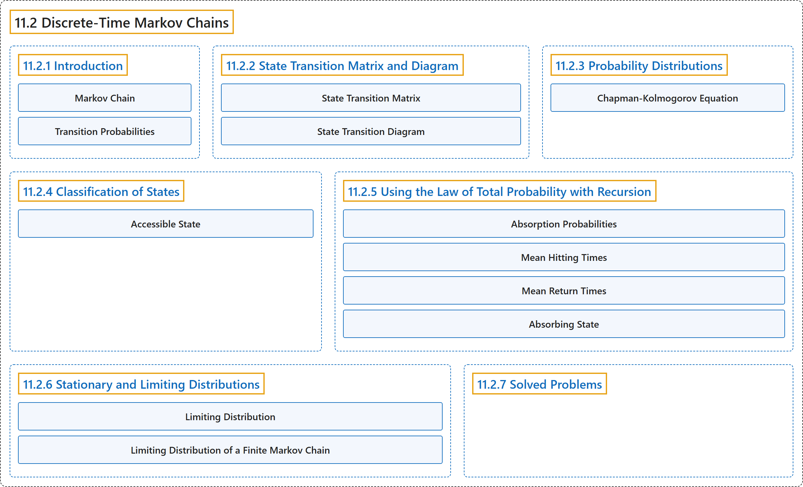

11.2 Discrete-Time Markov Chains
Classification

Glossary
| Term | Definition | 中文翻译 | Source |
|---|---|---|---|
| 11.2 Discrete-Time Markov Chains 离散时间马尔可夫链 |
(No definition) | （无定义） | Pishro-Nik, 2014, section 11.2 |
| 11.2.1 Introduction 介绍 |
(No definition) | （无定义） | Pishro-Nik, 2014, section 11.2.1 |
| Markov Chain 马尔可夫链 |
"We say that this process is a Markov chain if \(\begin{align*} &P(X_{m+1}=j \vert X_{m}=i, X_{m-1}=i_{m-1}, \cdots, X_{0}=i_{0})\\ &\hspace{80pt}= P(X_{m+1}=j \vert X_{m}=i), \end{align*}\) for all \(m, j, i, i_0, i_1, \cdots i_{m-1}\)." | 若 \(\begin{align*} &P(X_{m+1}=j \vert X_{m}=i, X_{m-1}=i_{m-1}, \cdots, X_{0}=i_{0})\\ &\hspace{80pt}= P(X_{m+1}=j \vert X_{m}=i), \end{align*}\) 对所有 \(m, j, i, i_0, i_1, \cdots i_{m-1}\) 成立，则称该过程为马尔可夫链。 | Pishro-Nik, 2014, section 11.2.1 |
| Transition Probabilities 转移概率 |
"The numbers \(P(X_{m+1}=j \vert X_{m}=i)\) are called the transition probabilities." | 数 \(P(X_{m+1}=j \vert X_{m}=i)\) 称为转移概率。 | Pishro-Nik, 2014, section 11.2.1 |
| 11.2.2 State Transition Matrix and Diagram 状态转移矩阵与状态转移图 |
(No definition) | （无定义） | Pishro-Nik, 2014, section 11.2.2 |
| State Transition Matrix 状态转移矩阵 |
"We often list the transition probabilities in a matrix. The matrix is called the state transition matrix or transition probability matrix and is usually shown by \(P\)." | 我们常把转移概率列成一个矩阵。该矩阵称为状态转移矩阵或转移概率矩阵，通常记为 \(P\)。 | Pishro-Nik, 2014, section 11.2.2 |
| State Transition Diagram 状态转移图 |
"A Markov chain is usually shown by a state transition diagram." | 马尔可夫链通常用状态转移图表示。 | Pishro-Nik, 2014, section 11.2.2 |
| 11.2.3 Probability Distributions 概率分布 |
(No definition) | （无定义） | Pishro-Nik, 2014, section 11.2.3 |
| Chapman-Kolmogorov Equation 查普曼-柯尔莫哥洛夫方程 |
"To obtain \(p^{(m+n)}_{ij}\), we sum over all possible intermediate states: \(\begin{align*} p^{(m+n)}_{ij}&=P(X_{m+n}=j \vert X_0=i)\\ &=\sum_{k \in S} p^{(m)}_{ik}p^{(n)}_{kj}. \end{align*}\) The above equation is called the Chapman-Kolmogorov equation." | 为得到 \(p^{(m+n)}_{ij}\)，我们对所有可能的中间状态求和：\(\begin{align*} p^{(m+n)}_{ij}&=P(X_{m+n}=j \vert X_0=i)\\ &=\sum_{k \in S} p^{(m)}_{ik}p^{(n)}_{kj}. \end{align*}\) 上述方程称为查普曼-柯尔莫哥洛夫方程。 | Pishro-Nik, 2014, section 11.2.3 |
| 11.2.4 Classification of States 状态的分类 |
(No definition) | （无定义） | Pishro-Nik, 2014, section 11.2.4 |
| Accessible State 可达状态 |
"We say that state \(j\) is accessible from state \(i\), written as \(i \rightarrow j\), if \(p^{(n)}_{ij}>0\) for some \(n\)." | 若对某个 \(n\) 有 \(p^{(n)}_{ij}>0\)，则称状态 \(j\) 从状态 \(i\) 可达，记作 \(i \rightarrow j\)。 | Pishro-Nik, 2014, section 11.2.4 |
| 11.2.5 Using the Law of Total Probability with Recursion 结合递推使用全概率公式 |
(No definition) | （无定义） | Pishro-Nik, 2014, section 11.2.5 |
| Absorption Probabilities 吸收概率 |
"Let \(l\in S\) be an absorbing state. Define \(\begin{align*} a_i&=P(\textrm{absorption in }l \vert X_0=i), \quad \textrm{ for all }i \in S. \end{align*}\)" | 设 \(l\in S\) 为一个吸收态。定义 \(\begin{align*} a_i&=P(\textrm{absorption in }l \vert X_0=i), \quad \textrm{ for all }i \in S. \end{align*}\) | Pishro-Nik, 2014, section 11.2.5 |
| Mean Hitting Times 平均击中时间 |
"Let \(T\) be the first time the chain visits a state in \(A\). For all \(i \in S\), define \(\begin{align*} t_i&=E[T \vert X_0=i]. \end{align*}\)" | 设 \(T\) 为链访问 \(A\) 中某一状态的首次时间。对所有 \(i \in S\)，定义 \(\begin{align*} t_i&=E[T \vert X_0=i]. \end{align*}\) | Pishro-Nik, 2014, section 11.2.5 |
| Mean Return Times 平均返回时间 |
"Let \(r_l\) be the mean return time to state \(l\)." | 设 \(r_l\) 为状态 \(l\) 的平均返回时间。 | Pishro-Nik, 2014, section 11.2.5 |
| Absorbing State 吸收态 |
"Note that states \(0\) and \(3\) have the following property: once you enter those states, you never leave them. For this reason, we call them absorbing states." | 注意状态 \(0\) 和 \(3\) 具有如下性质：一旦进入这些状态，就永远不会离开。因此我们称它们为吸收态。 | Pishro-Nik, 2014, section 11.2.5 |
| 11.2.6 Stationary and Limiting Distributions 平稳分布与极限分布 |
(No definition) | （无定义） | Pishro-Nik, 2014, section 11.2.6 |
| Limiting Distribution 极限分布 |
"The probability distribution \(\pi=[\pi_0, \pi_1, \pi_2, \cdots ]\) is called the limiting distribution of the Markov chain \(X_n\) if \(\begin{align*} \pi_j=\lim_{n \rightarrow \infty} P(X_n=j \vert X_0=i) \end{align*}\) for all \(i, j \in S\), and we have \(\begin{align*} \sum_{j \in S} \pi_j=1. \end{align*}\)" | 若 \(\begin{align*} \pi_j=\lim_{n \rightarrow \infty} P(X_n=j \vert X_0=i) \end{align*}\) 对所有 \(i, j \in S\) 成立，且有 \(\begin{align*} \sum_{j \in S} \pi_j=1. \end{align*}\)，则称概率分布 \(\pi=[\pi_0, \pi_1, \pi_2, \cdots ]\) 为马尔可夫链 \(X_n\) 的极限分布。 | Pishro-Nik, 2014, section 11.2.6 |
| Limiting Distribution of a Finite Markov Chain 有限马尔可夫链的极限分布 |
"The unique solution to the above equations is the limiting distribution of the Markov chain, i.e.," | 上述方程的唯一解即为该马尔可夫链的极限分布，即 | Pishro-Nik, 2014, section 11.2.6 |
| 11.2.7 Solved Problems 例题详解 |
(No definition) | （无定义） | Pishro-Nik, 2014, section 11.2.7 |
References
Pishro-Nik, H. (2014). Introduction to probability, statistics, and random processes. Kappa Research. Retrieved October 28, 2026, from https://www.probabilitycourse.com/